This Chair is Not a Chair
Date
Spring 2021
Role
Spatial Design
Conceptual Design
CAD Modelling
Physical Modelling
Tools
Rhinoceros 7
Recycled Cardboard
Overview
The creation of this waffle-model chair is a student project for a spatial design class. The task for the project was to create a sitting surface for one person that explored various shapes and complex geometries apart from the regular formations of a standard chair. The design of the chair had to have aesthetically pleasing form that it could act as its own artistic artifact while also functioning as a chair if one chose to interact with it. In addition, the entire chair had to fit inside an 18” cubic bounding box and also take human dimensions and ergonomics into consideration.
My approach and inspiration for the chairs design was the anatomy and body of a four limbed animal, such as a gorilla and an elephant. To construct the chair as a 3D model, the chair was digitally formed as a solid and then converted into the waffle model. With extracting the cross-sections of each individual piece, I was able to create templates and construct a physical model.
The 3D geometries were created in an AutoCAD software (Rhinoceros) while the physical sculpture was made from standard recycled cardboard and cut by hand. The physical model created is scaled down by 2.
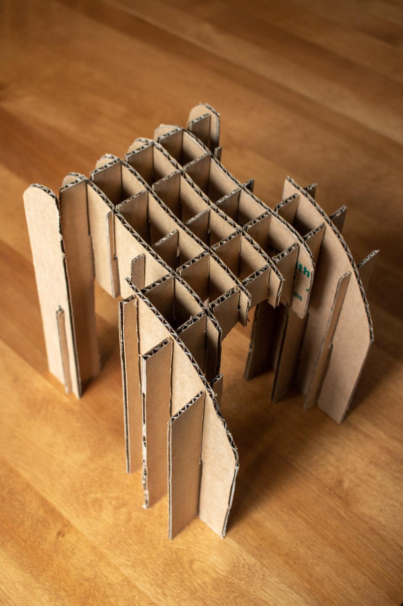
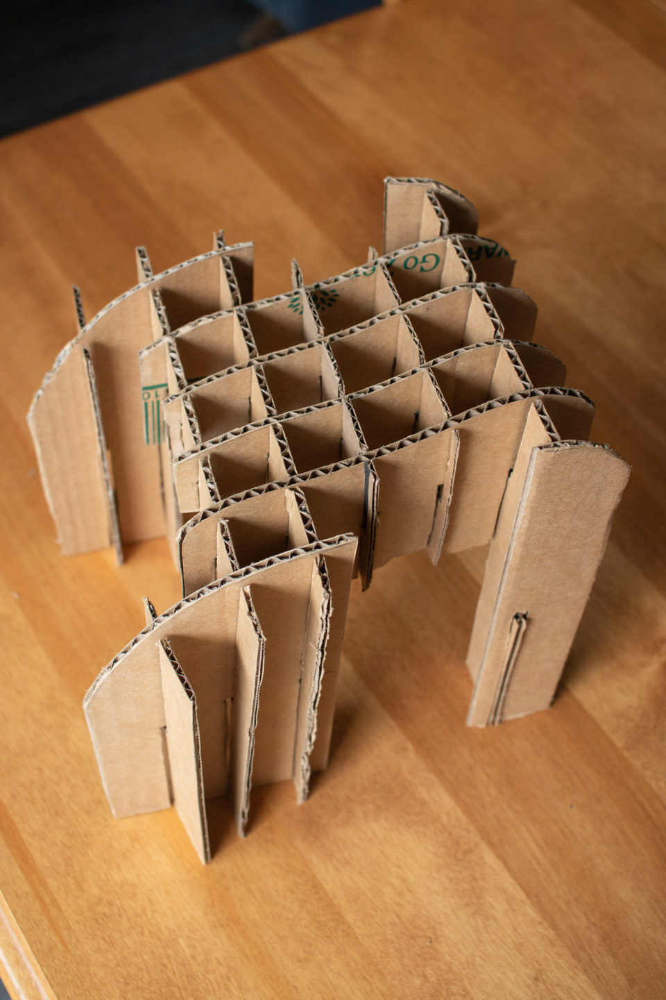
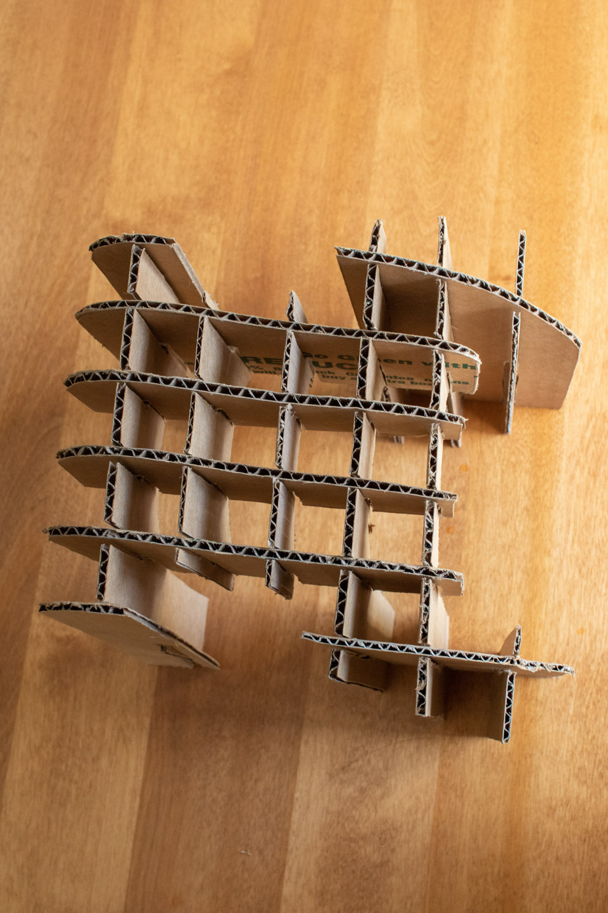
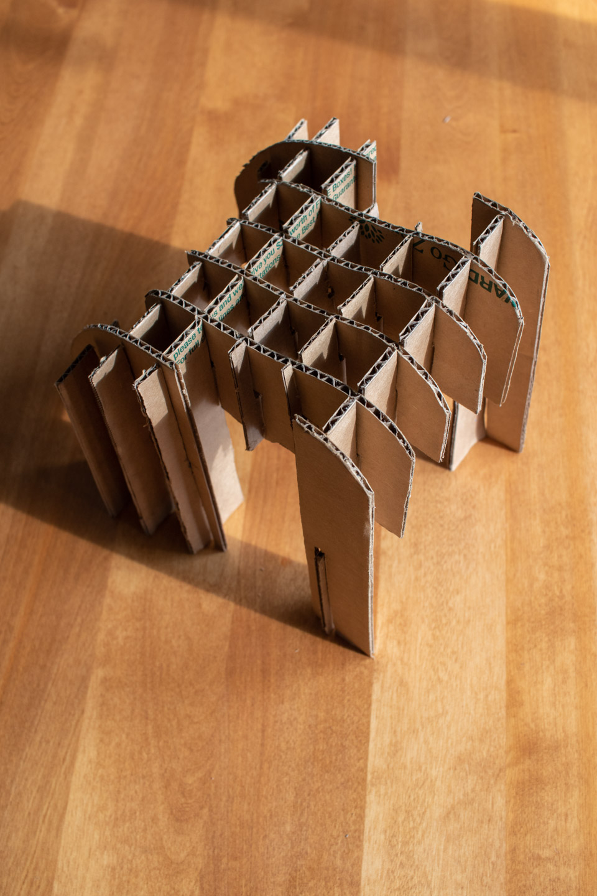
Above: Cardboard physical model of the chair, scaled down by 2.
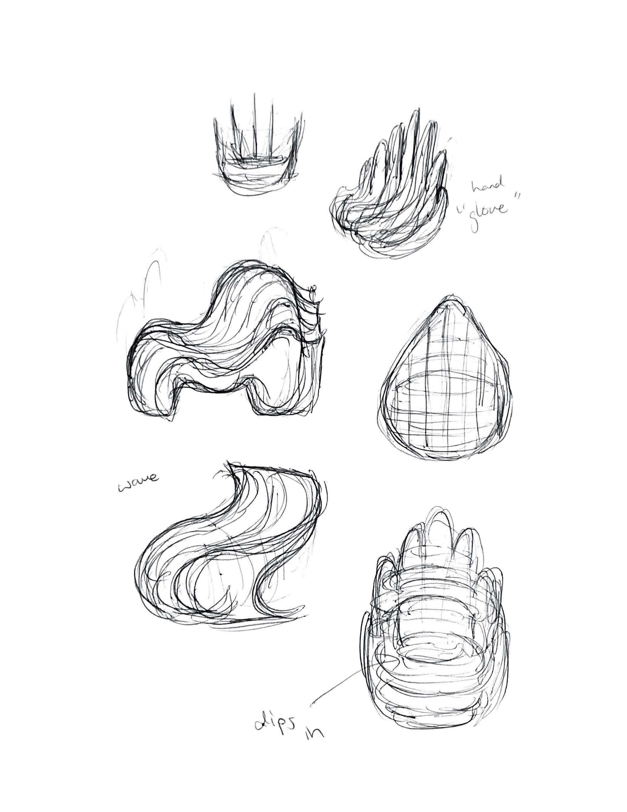
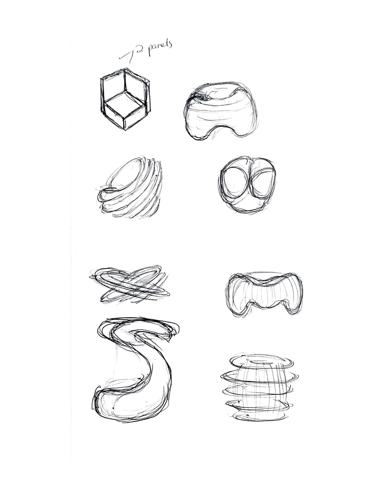
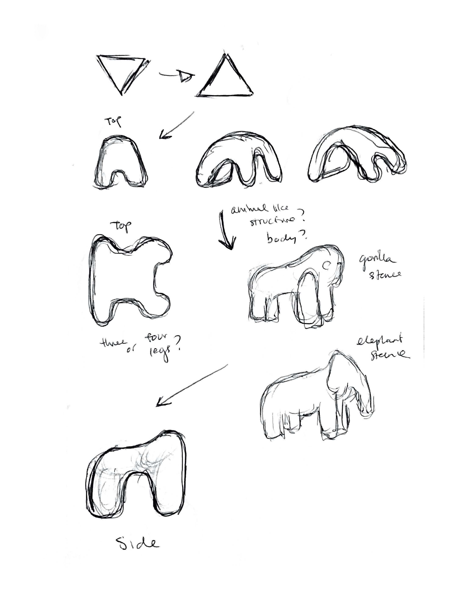
Above: Early sketches and brainstorming ideas.
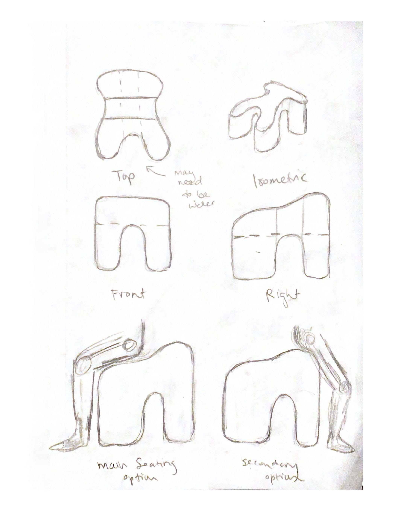
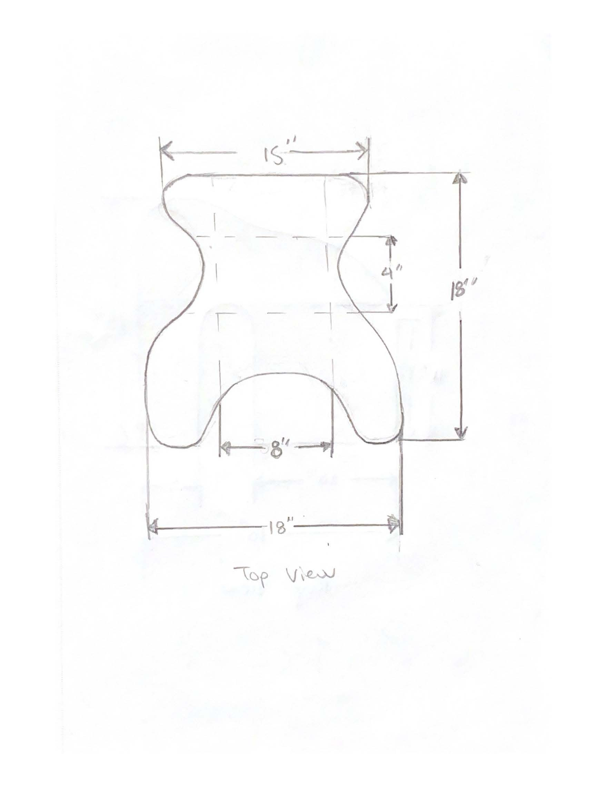
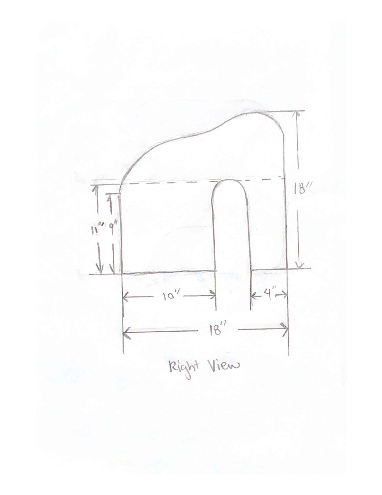
Above: Further developed sketches of designing the chair.
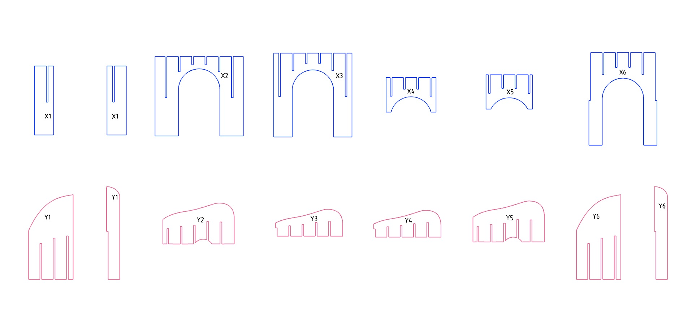
Above: The templates of the individual pieces of the chair in order to construct the physical model.
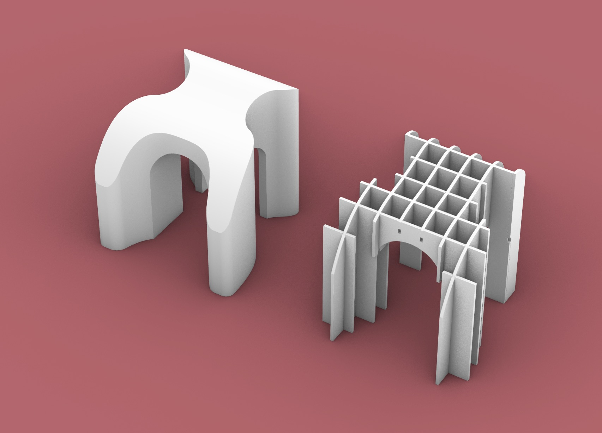
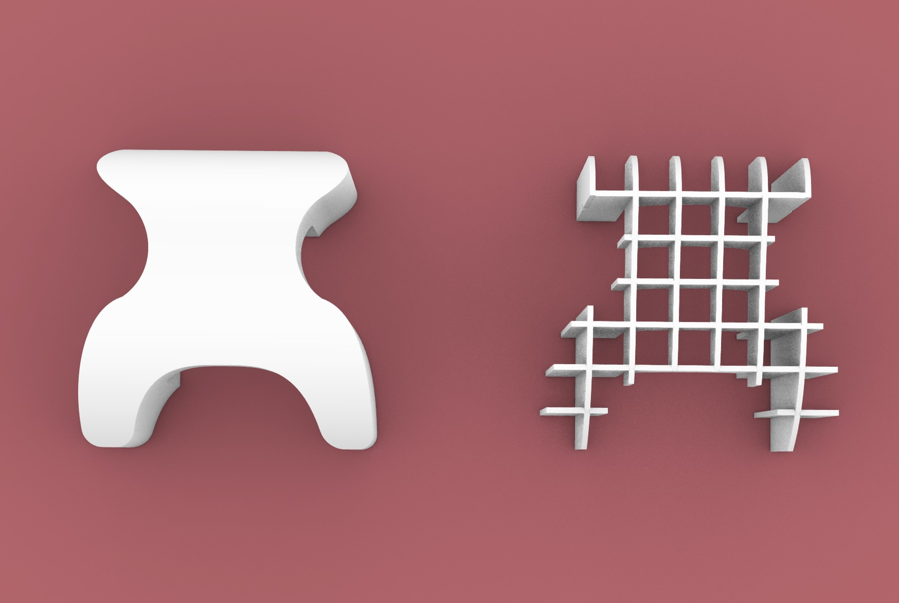
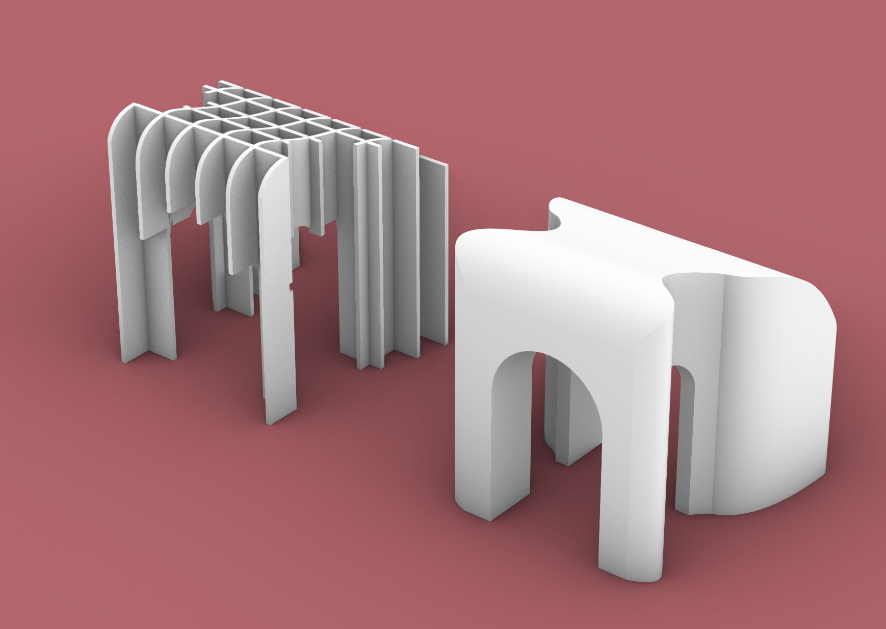